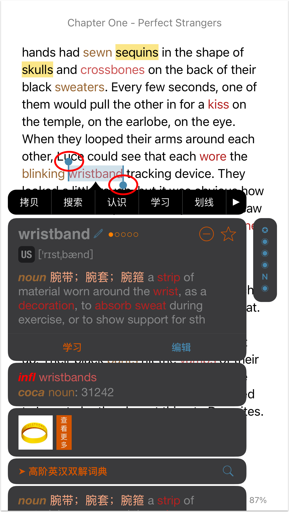

title: 手勢說明
聽閱將書籍分為三類：純文字、文字類PDF、圖片類PDF。純文字包括epub、mobi、txt、rtf等書籍。PDF分為文字類PDF和圖片類PDF。如果您利用Adobe或其他PDF閱讀器打開PDF後可以選中並拷貝PDF中的文字內容即為文字類PDF，若不可以則為圖片類PDF。
在閱讀過程中，我們將儘量保證同一手勢在不同類型書籍中的效果一致。但由於科技限制，對某類書籍，部分手勢操作會有所限制。比如對於圖片類PDF，不支持拖動選擇書籍內容。
手勢介紹
長按
若將選詞管道設定為“長按”，長按任意單詞可打開單詞詳情選單查看解釋。
*注意：圖片類PDF的長按查詞功能只在8.6.8及之後的聽閱版本支持。
點按
若點按的是學習、筆記、劃線內容，點按即可查看其詳情。
若將選詞管道設定為“點按（連續查詞）”或“點按（不連續查詞）”，點按任意單詞即可打開單詞詳情選單查看解釋。若選詞管道是“長按”，並且詞彙欄位置未設定為“無”，點按書中高亮詞彙可在詞彙欄快速查看單詞解釋，點按未高亮詞彙則會在詞彙欄顯示單詞所在句子的中文翻譯。
點按空白區域，可隱藏/顯示頁面上下工具列。
按兩下
按兩下單詞可快速選中單詞所在句子，並查看句子中文翻譯。
對於文字類PDF和圖片類PDF，按兩下空白區域可放大/縮小頁面。
對於純文字書籍，按兩下書中圖片可放大圖片查看。
對於雙語書籍，按兩下句子可查看真人翻譯。
三擊
對於點讀版的有聲書籍，三擊單詞將從該單詞所在句子開始播放音訊，三擊空白位置可暫停/重啓音訊播放。通過此手勢可快速從書中指定位置播放音訊，也無需點按播放/暫停按鈕快速啟動/暫停音訊播放。
對於非點讀版有聲書籍，三擊頁面可啟動/暫停音訊播放。
拖動
通過其他手勢選擇單詞或句子後，可拖動兩個實心圓點擴展選擇區域，選擇書中更多內容。
注意：拖動手勢只支持純文字和文字類PDF，不支持圖片類PDF。

上拉
上拉頁面退出閱讀器，無需點擊巡覽列的返回按鈕。
注意：如果您啟用了“垂直滾動”，上拉退出功能失效。
下拉
下拉頁面為當前頁添加書簽。
注意：如果您啟用了“垂直滾動”，下拉添加書簽功能失效。*
從荧幕左邊緣向右滑動
如果您將詞彙欄位置設為“無”，可通過從荧幕左邊緣向右滑動的管道打開詞彙欄。